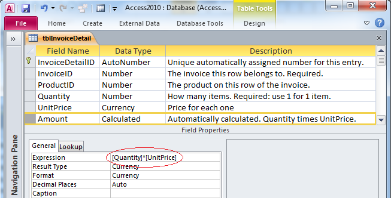
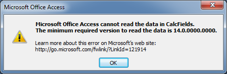

Microsoft Acces. Советы для пользователей
Автор Allen Browne, ноябрь 2003 г. Обновление апрель 2010 г.
Перевод с английского Александр Артамонов, октябрь 2011 г.
Оригинал http://allenbrowne.com/casu-14.html
Вычисляемые поля
Как заставить Аксесс хранить результат вычислений?
Например, если у вас есть поля Количество и ЦенаЗаЕдиницу, как заставить Аксесс записать Количество * ЦенаЗаЕдиницу в поле Стоимость?
Лучший ответ: "Не делайте этого!"
Место вычисляемых полей ― в запросах, а не в таблицах.
Вычисляемые столбцы являются неотъемлемой частью электронных таблиц типа Excel и ему подобных, но им не место в таблице базы данных. Никогда не храните значение, которое зависит от других полей: это базовое правило нормализации. Нарушьте это правило ― и сразу появится забота, как поддерживать корректность вычисления во всех возможных ситуациях.
Спросите себя: "Если в этом поле окажется значение, отличное от вычисленного, будет ли это ошибкой?" Если ответ «Да», вам не стоит заводить это поле. Если разница будет нести определенный смысл, тогда вам это поле действительно нужно.
Итак, как же получить вычисленное поле, если его нельзя хранить в таблице? Используйте запрос:
Это создаст поле с именем Стоимость. Любая форма или отчет, основанные на этом запросе, воспримут это вычисленное поле как любое другое, так что вы легко сможете просуммировать результат. Это просто, эффективно и надежно.
Ну... Почти надежно. Остается вероятность неверной интерпретации вычисляемых полей.
Вы все еще хотите хранить вычисляемые поля?
Есть обстоятельства, когда хранение вычисленного результата имеет смысл ― типичный случай, когда нужна возможность иногда хранить отличное от вычисленного значение.
Скажем, плата за монтаж составляет дополнительные 10%, но чтобы выиграть тендер вы хотите отменить эту плату. Вычисляемое поле не сработает. В этом случае вполне разумно иметь запись с платой 0% вместо 10%, так что вам придется хранить это как поле в таблице.
Чтобы получить это, используйте событие AfterUpdate контрола на вашей форме, чтобы автоматически посчитать плату:
Private Sub Количество_AfterUpdate()
Me.Плата = Round(Me.Количество * Me.ЦенаЗаЕдиницу * 0.1, 2)
End Sub
Private Sub ЦенаЗаЕдиницу_AfterUpdate()
Call Количество_AfterUpdate
End Sub
Теперь, каждый раз, когда меняется Количество или ЦенаЗаЕдиницу, Аксесс автоматически пересчитает новую плату, но пользователь может перезаписать вычисление и ввести другое число, если потребуется.
Если у вас возник вопрос, как бы помочь пользователю с вычислением с помощью описанного приема, см. Enter text in calculated controls.
А как насчет вычисляемых полей в Аксессе 2010?
Аксесс 2010 позволяет создать вычисляемое поле в таблице вот таким образом:

Просто выберите «Вычисляемый» из типов данных и ниже появится строка «Выражение». Впишите выражение. Аксесс будет пересчитывать его каждый раз, когда вы вводите запись.
Это может показаться простым решением, но оно создает больше проблем, чем решает. Вы быстро столкнетесь с тем, что выражения весьма ограничены. Также это сделает базу данных бесполезной для тех, кто будет использовать ее в Аксессе 2007. Вместо того, чтобы прочитать данные, они увидят вот такое сообщение:

Хуже того, результаты вычислений ненадежны. Если вы поменяете формулу выражения после того, как данные были внесены в таблицу, существующие результаты не будут правильно обновлены (хотя для новых записей редактирование обновит результаты). Так что на результаты вычислений полагаться нельзя. Сжатие/восстановление не производит пересчет, так что нет очевидного пути исправить неверные результаты.
Поскольку нельзя проиндексировать вычисляемые поля, вы не получите выигрыша в производительности, используя их. Вы нарушите фундаментальное правило нормализации, не получив ничего взамен. Мы рекомендуем использовать запросы для вычисляемых полей ― как и в предыдущих версиях.